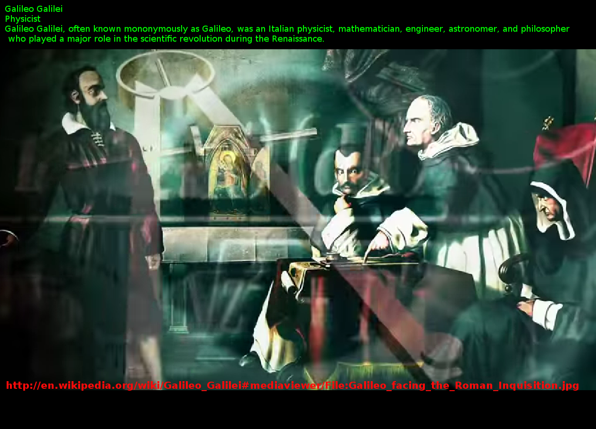
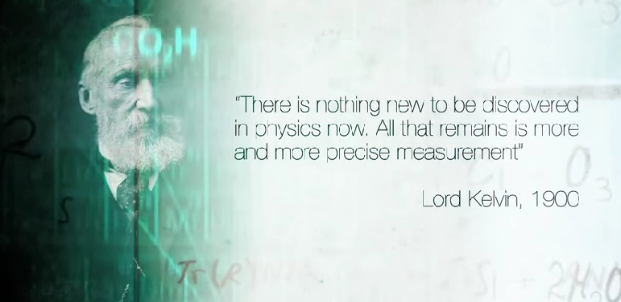
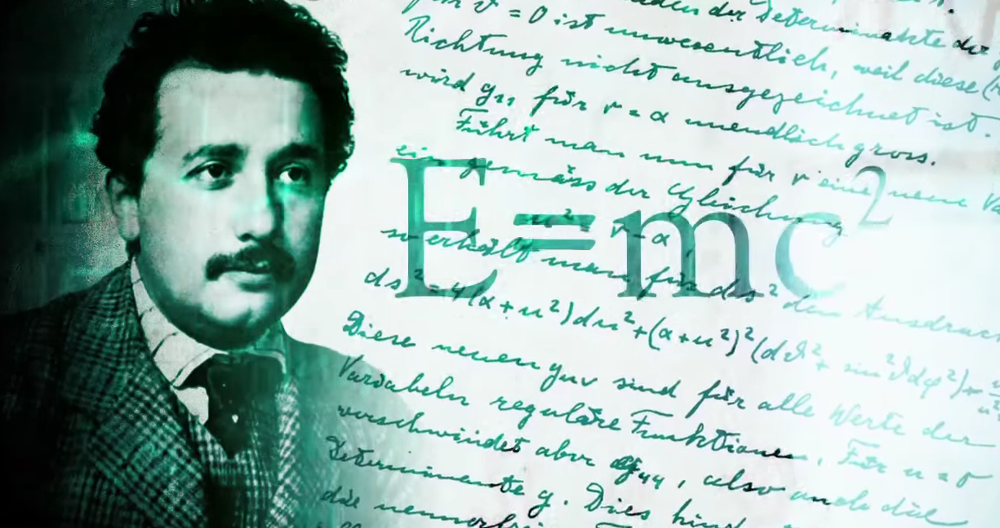

Cold_Fusion
Relation
United States Department of Energy
deuterium
pathological science
heavy water
American Physical Society
American Chemical Society
Utah
The New York Times
Steven E. Jones
Space and Naval Warfare Systems Center
Peter L. Hagelstein
palladium
Oxford University Press
neutrons
Naturwissenschaften
Nathan Lewis
Muon-catalyzed fusion
muon-catalyzed fusion
Martin Fleischmann
Isomeric transition
Georgia Institute of Technology
CR-39
CERN
Caltech
Brigham Young University
Bhabha Atomic Research Centre
zeppelin
Yoshiaki Arata
Wired Magazine
Wired magazine
watt
Utility patent
U.S. Secretary of Energy
U.S. Patent and Trademark Office
University of Utah
University of Southampton
University of Missouri
Tritium
tritium
Toyota Motor Corporation
Thomas Graham chemist
Texas AM University
Texas AM
temperature
Tadahiko Mizuno
strip mining
Steven E. Koonin
Stanley Pons
Stanford University
Spencer Abraham
SPAWAR
sound
Sidney Kimmel
scientific journal
Scientific controlNegative
Science magazine
Rutgers University Press
Routledge
room temperature
Robert Huggins
Robert Duncan physicist
Reproducibility
Reaction intermediate
Quantitative analysis chemistry
Pyroelectric fusion
proton
Princeton University Press
pressure
platinum group
planetary core
perpetual motion machine
peer review
Patterson Power Cell
patent
palladium hydride
Out-of-pocket expenses
OppenheimerâPhillips process
null result
Nuclear transmutation
nuclear transmutation
nuclear reaction
Nuclear isomer
nuclear fusion
Nobel Laureate
nickel
New Scientist
neutron
Nernst equation
National Institute of Advanced Studies
Mössbauer effect
Ministry of International Trade and Industr
Michael McKubre
MeV
metallic crystal
Massachusetts Institute of Technology
Manual of Patent Examining Procedure
Main sequence
magnetism
Luis Walter Alvarez
laser
Kurt Peters chemist
Kevin Wolf
Karl Popper
Julian Schwinger
Journal of Informetrics
John R. Huizenga
John Bockris
Johann Rafelski
Istituto Nazionale di Fisica Nucleare
Isotopes of hydrogen
International Conference on Cold Fusion
Institute for Scientific Information
Indira Gandhi Centre for Atomic Research
Indian Institute of Technology
Incredible utility
IEEE Spectrum
hydrogen
Howard Kent Birnbaum
Houston Chronicle
high-temperature superconductivity
Helium-3
greenhouse effect
global warming
George H. Miley
Gary Taubes
gamma rays
gamma ray
gamma particle
Friedrich Paneth
Frank Close
First law of thermodynamics
Final Exam The Outer Limits
FedEx
Faraday-efficiency effect
falsifiability
Exxon Valdez oil spill
European Patent Office
euphemism
E. Paul Palmer
Energy Catalyzer
ENEA Italy
electrolytic cell
electrolysis
electrochemistry
electricity
Effective nuclear charge
Douglas R. O. Morrison
David Goodstein
Crank person
Coulombs law
Consiglio Nazionale delle Ricerche
conjecture
Compton edge
collective identity
Coldfusion
Cold fission
Chennai
chemical reaction
Chase N. Peterson
celsius
CBS
California Institute of Technology
Bubble fusion
Branching fraction
Bohr model
Bart Simon
anti-nuclear movement
American Scientist
Alpha particle
Akira Kitamura
activation energy
acid rain
Accountability in Research
1973 oil crisis


